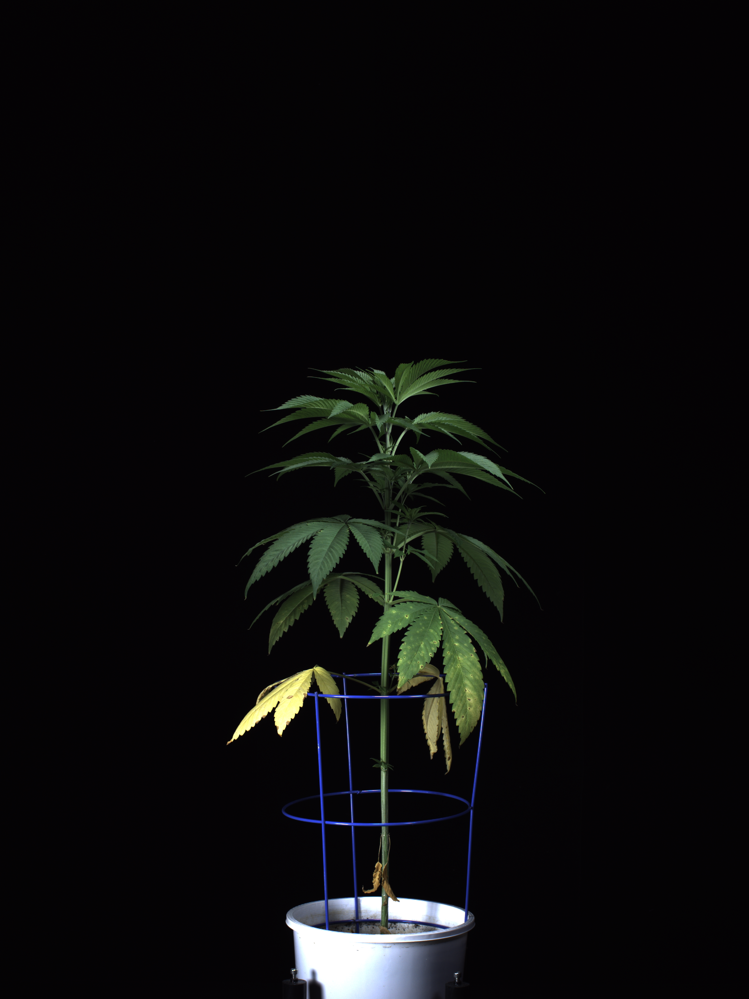

The left image is the original unprocessed archive member, displayed by CSS only. It verifies an upright plant with its apical tip, main stem, and pot opening in a single native 2472 × 3296 frame. The pot’s lower edge is cropped by the image boundary. The right image is a different inherited sample/view/time and is included only to make the wider field of view inspectable; no paired lineage is established.

Verified native APPF frame — preferred research reference. RGB_3D_3D_side_far_0_084267-H.zip / RGB_3D_3D_side_far_0_084267-H_2021-02-25_09-08-57.png
2472 × 3296 RGBA PNG; SHA-256 d24fb912dd3c6a575302238bbe18cd869b93b4899c925e32711558cec2d5eb63.
The uncut tip, main stem, and pot opening are visible; the pot bottom is cropped. The cage, sparse elongated habit, dark upper leaves, and yellow/dead basal tissue remain part of the observed source context. No exact cultivar mapping for plant ID 084267-H has been verified.
Inherited derived crop — comparison only; not a paired crop.
This different sample/view/time clips the plant tip and omits the full pot field of view. It must not be treated as evidence that all plant tissue is green; the native frame at left visibly contains senescent basal tissue.
APPF TPA Hemp PIA, native side_far RGB: only verified high-resolution, public source found that satisfies upright living plant, visible pot opening/main stem, and indoor phenotyping context. It is a research-only CC BY-NC 4.0 dependency and its plants retain cages and a sparse, elongated architecture. The verified frame does not show the pot bottom and plant ID 084267-H has no verified cultivar mapping.
PLOS ONE 2021 Figure 1: a CC BY 4.0, 2250 × 2300 composite that provides dense, flowering/pre-harvest whole-plant examples. It is a paper figure rather than a downloadable image dataset; each plant is only a panel within the composite and pot context is limited. It is an anatomy reference, not a segmentation-data replacement.
Mendeley Data 2025 greenhouse monitoring set: verified whole, front-view potted plants under controlled greenhouse imaging, CC BY 4.0, but released sample frames are only 273 × 552 pixels even though the paper reports 1080p capture. It is unsuitable as the requested high-resolution replacement.